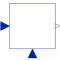

SVcontrolSingle-Variable continuous controller |

|
Information
This information is part of the Modelica Standard Library maintained by the Modelica Association.
Block has two continuous Real input signals and one continuous Real output signal. The block is designed to be used as base class for a corresponding controller.
Connectors (3)
| u_s |
Type: RealInput Description: Connector of setpoint input signal |
|
|---|---|---|
| u_m |
Type: RealInput Description: Connector of measurement input signal |
|
| y |
Type: RealOutput Description: Connector of actuator output signal |
Extended by (1)
|
Modelica.Blocks.Continuous P, PI, PD, and PID controller with limited output, anti-windup compensation, setpoint weighting and optional feed-forward |